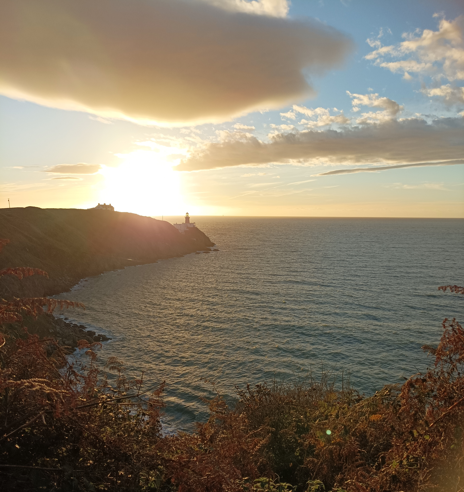
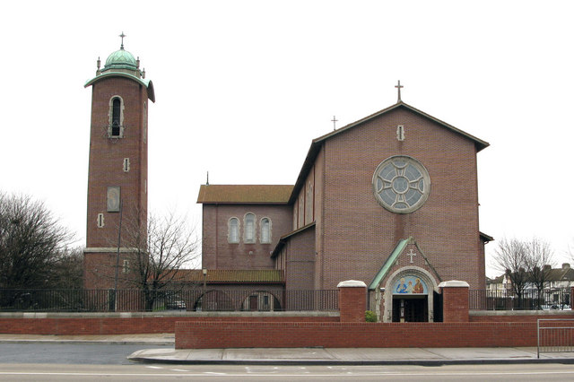
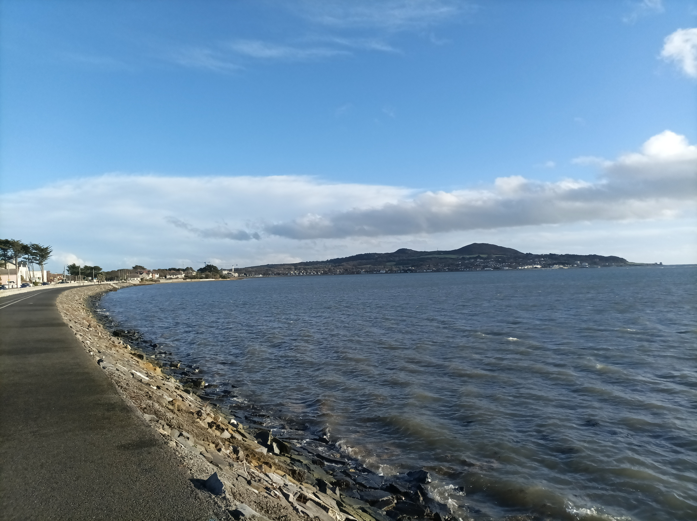

Howth

I planned to cycle here on in October, the week after I went to North Bull lighthouse and formulated the project in my head, but my son woke up as I was getting ready and I soon realised that he wasn’t going back to sleep. So I decided to turn the L into a W and we drove out to Howth together and watched the sun rise as we walked down from the summit car park, and around a wee bit of the outrageously beautiful bayside walk, before his five-year-old legs started to get tired and we tramped back up to the car. I took a wodge of photos that day and I’m using them here because the light was extraordinary and I ended up being in a rush. So if you are sitting here wondering about the position of the sun at particular times of the year — which I increasingly am myself — then that’s why the Baily Lighthouse in Howth is looking like it does.
1048 Saturday Jan 7, 2023
I hadn’t planned to go cycling today, but I got some news yesterday and it split my soul in two, with one part being me and the other part being a freaked-out variant threatening to take over. On top of that, I can feel a bout of emptiness being triggered, in a way that I’ve never been so explicitly aware of, and I know I need to take action. I don’t get depressed in the sit-in-bed-all-day kind of way but I do feel an emptiness in me whereby basic life seems so aimless. Like, I can’t sit and play with my son because I can’t stop thinking how pointless it all is, and so I’ll usually take him out for a walk and we’ll have a blast. I need to do practical stuff like rearranging furniture or going cycling somewhere. And not just going cycling. It has to be somewhere because I need that purpose. And I have to keep the locations changing or rotating, otherwise the pointlessness envelops me. I can’t train per se. I couldn’t sit on an exercise bike or lift weights in a gym or swim lengths of a pool. I just get depressed. I played so much sport growing up but I couldn’t take it seriously after the age of sixteen and sport, along with nearly every profession, just seemed so emotionally lacking, and I could never again commit myself to the rugby and cricket I had been playing insatiably. All that training seemed like such a loadamebollocks. I decided I wanted to be a writer, like George Orwell, and write about how shite everything was, and I knew, from Samuel Beckett, that my career could last until my eighties, unlike with sport.
I bumped into Kev O’Brien in the playground last week and he’s dunzo now. Ireland’s most capped cricketer, out of contract, not selected for the World Cup in the autumn. It was tough enough for me in my mid-thirties getting a hashtag real job after I finished up my PhD slash vow of poverty, but I can’t imagine how tough it’ll be for him, scouring the world for a cricketing job or else having to start afresh. Especially with kids. We played with and against each other as teenagers, before I chose the long and easy road, stopping in every Battle Cruiser on the way. Seeing Kev is a reminder of the life I chose to pursue, and the need to get stuff down, as the clock is ticking. Bar technical stuff, this is all I’ve got, and if it’s shite, then at least I thew something at the wall.
In my twenties I poured booze into the hole in my soul, and I played five-a-side football with the lads, and a smattering of junior rugby, but sporting fulfillment only came when I discovered cycling. I was doing rehab from a knee operation and I had to bulk up my little skinny leg and just wasn’t doing the gymwork. My physio Andy Watson told me cycle up hills, preferably in a higher gear, and one day I battled my way up the Wicklow mountains on my shitty-ass city hybrid bike, and I loved it like nothing I had every experienced. Since then I have had an activity in life with all of the joyous brutality of rugby except now I had the time and space to ponder it all. A place where my endless thoughts could find expression, coming and going in response to the changing landscape. A mobile meditation of sorts.
So anyway, I’m in the kitchen, cleaning up after breakfast, and I can feel the emptiness. We’ve no plan for the day and I can feel the nothingness come at me. But I know too that the issues from yesterday are triggering the trauma of going to boarding school when I was eight years old, so I get the idea of putting on some songs from that era, because there are so few details that I can remember properly, but the songs remain the same. First I stick on Glory Box by Portishead, released in 1994, but my memories are actually from my secondary school days, and then I lash on It’s my life by Dr Alban, which was my favourite song in the autumn of 1992, and immediately I’m in tears. I’m only nine and I’m back home in my folks’ gaff, and it’s time to go back to school, cos it’s Sunday evening. Atlantic 252 have announced they are going to play the song any minute and I’m waiting and waiting cos I want to tape it and then I’ll be able to listen to it all week on my walkman. But we have to leave during the song and the music might as well have evaporated.
I go up for a shower and afterwards I declare I need to go for a cycle to help me process stuff. My wife and son are up for going to the playzone area nearby so I drop them there and then head out towards Howth. The cleanest and nicest way there is to take the canal into basically town and then jump on the cycle lane all the way up the coast from Fairview but I’m in the humour for piecing together more of the Northside, so I take the Abbotstown quadrant around towards Finglas and then hop onto that ringroad that pieces together the inner outer Northside all the way from Finglas Village to what turns out to be Killester. The road starts out life as Glasnevin Avenue and then it’s Collins Avenue, but it’s basically a North Circular Road, part deux, albeit low on embassies. It’s wall-to-wall traffic lights and junctions and I wouldn’t recommend it unless cartography or transit is your goal. Everywhere in the inner outer Northside seems to be a road, not a place, kinda like Belfast. Houses and gardens line the roads and, even though you never feel you are in a village, everywhere there is some prospect of life in a way that you don’t get in siloed Blanch or New Lucan. Every so often a church emerges, the size of a football pitch, yet they look like placeholder prefabs, made of cardboard, and erected to ensure the newly housed residents could get mass while the real church is being built. Even the names are grandiosely Catholic, plucked from a game of Vatican Bingo. We’re talking Holy Child Roman Catholic Church, Whitehall, which was ‘designed to accommodate a congregation of 1750’. We’re talking, Our Lady of Consolation, Malahide Road.

After the Malahide Road things get more familiar. My mam’s relatives are from around here. Killester, Marino, Raheny, although I certainly couldn’t draw you a map because I was always driven here. I see from a shopfront that I’m actually in Killester, and I feel a warm memory of my mam’s Uncle Jack. I’m very young and he’s in his rocking chair, making an imaginary mouse run up his arm. The whole extended family used to have big card games a few times a year, with all the men in one room, smoking cigars and playing poker, and all the women and children in the other room playing newmarket, whose rules I can’t remember. My mam was the only woman in the poker room. The older generation all died out, including my grandmother who was a widow for fifty-seven years. Her husband, Desmond Brennan, had died in in 1948. He was a footballer for the Dubs and an accountant and a boozer, and he was only thirty-seven when he died. All four digits on the shared gravestone were different. 1.9.4.8 and 2.0.0.5. I can’t imagine the loneliness for my nana. The kids were four, six, eight and ten, and my mam was off to boarding school in Longford a year later, aged seven, a double trauma that I’m only beginning to understand now myself, as my own child reaches that age, and I try to explore my own past, and my family’s, to try to minimize the inter-generational trauma that I don’t yet understand. You can still see my mam get triggered by frozen memories, or even by imaginary fantasy-memories, like when she sees Drico on the telly and she imagines his grandad and her own dad on the piss together in Clontarf. My mam still treasures his medals because that’s all that survived. Here he is, playing in the 1934 All-Ireland Final.
After my granny died, Uncle Jack emigrated to Australia, aged nearly 90, to be with his daughter. The Sun did a piece on him as Ireland’s oldest emigrant. He was a lifelong swimmer well into his eighties and he must have been a great role model to her just as she has been to me, fending off age with exercise. Jack died ten years later, a week shy of his 100th birthday. I’ve often thought of putting a few bob on my mam to live to 100, just as Shane McGowan allegedly bet on himself to live to 50, then used the cash as a cheeky windfall. The older generation are all gone now and I don’t know if any of my generation are in contact with each other, but my mam and her cousins still meet for dinner a few times per year and it’s nice that they stick together. It’s a reminder to make sure that we keep up the full-size family occasions, with my all my sisters and our many kids.
I’ve been trying to make my way north, and to the sea, so that I can follow the coast road to Howth, but I’m still a bit lost. It’s like trying to navigate life using childhood memories, although perhaps that’s a good metaphor for adulthood. I end up at yet another church, which turns out to be St Brigid’s Church in Killester, from the 1920s, with a more Irish name. I give in and look at Google Maps and realise I’m beside St Anne’s Park, which I’ve been studiously avoiding on my trips to Clontarf, cos I have cold but indistinct memories of the place. I weave through and there’s a pop-up market on with loadsa burgers and organic vegetables, and there’s a mother on a bike asking her son if he wants to buy kale so that they can make crippies. There’s wide open spaces and the kids have no trouble making use of them but the adults are crouch-standing in huddles to eat their food cos there’s nowhere for them to sit and eat and chill. Basic recreation is something that just doesn’t seem to be understood deeply in this country. Please just stick a few seats down so we can all enjoy ourselves. Picnic benches. Fold-up seats. Anything. It’s doesn’t have to be a beanbagged chill-out space run by fans of The Orb, with lashins of herbal tea on the go, although I’m not gonna pass on the chance to advocate that.
Meanwhile, my infamous mudguard is giving me trouble again and I’m amazed to find out that there’s a bike repair spot here. The lads are sound and the son tightens it back with two teeny bolts and I feel brand new. There’s a stream running through the park so that takes me to the obviously sea and now I’m on the bike lane with a functional bike and a massive wind on my back. The water is in today and it comes right up to the bike lane so Doggerland has vanished. The grey sea seems dull now compared to the seaweed fields from the last day, but it’s fun to ride this close to the water.

The bike lane ends a bit before the x-shaped traffic jam at Sutton Cross, the tombolo which connects Howth Head to the mainland. If you need evidence that the land is made of sand, try playing rugby against Suttonians and see how your skin shreds on the soil if you don’t lather up in vaseline beforehand. Sutton Cross splits two ways. Straight on brings you to Howth village, and the Dart station, from which daytrippers can indulge in hikes to the summit and the finest range of fish-and-chip options on the island of Ireland, and there are a few swimming spots for the hardy. But when you are ready to mix it up, check out the bay-side of the peninsula, visible in the picture above, with its warren of walkways, and some very hidden beaches. Quite a few people live here and, as you continue along the peninsula, sticking to the coast as much as possible, the houses start to get genuinely interesting, which is not something you would normally say on the island of Ireland. Some are right on the sea, others are raised high and I wonder how many of the ageing residents will have to install mini ski-lifts just to get up to their front door. I follow the Strand Road as far as I can and then have to climb some decent gradients to get back to the main road. It’s pleasingly difficult on St Fintan’s Road, around 10% gradient for a few hundred metres, and doubly enjoyable because I’ve only ever been up the main road here which is steady but dull 4%. When I re-emerge on the main road, I’m astonished to find that there actual horses here. I can’t put my finger on why I’m so astonished, as they are everywhere on the island of Ireland, even in people’s gardens, but these eastmost grazers seem out of place.

The road grinds on to the summit, with the views now cordoned off, and it’s just a breathing exercise to get to the top. There’s a lad who races past me out on a steepish part but then I sit on his wheel to get a rest, and, when the road rises again, I spit him out the back on my way to a glorious victory. I take a cheeky look back down the road as I turn right up to the summit car park, and, to my delight, he is struggling, but he’ll make it. I lock the bike in the car park and get ready for the slightly scary walk to the lighthouse, but I’m running out of time cos I’ve to get back and bring the chunfla for his Craig David vaccination at 4 o’clock. I don’t have time to walk out to the lighthouse and back, so I decide to cheat, because we walked to this lighthouse so recently, and the sunrise light was so much better. I sit down and take a windy video, as my bike chewed up my earpones on the way here, and then I’m offski. The descent is straight and fast and I make the bad decision to stop and see if I can take photos this time. It’s a bad decision because a descent like this clears the head, and I resolve to minimize such stoppages in the future. Much as I adore the brain-filling joy of climbing, and the depths you need to go to just to keep going, the intense focus of going downhill washes the mind clear of thought, like restarting your computer, or downing a skin of pints after work on a Friday, which is how I used to do it.
I take the clean route home, along the seaside bike lane to Alfie Byrne Road and then I scooch over to the canal and piss it home to pick up the others. My bad feelings from earlier have been kicked to touch and I can take on the week from the yellow zone, not the red zone. On the coast road, I get in behind a couple of lads doing a steady pace into the strong wind, and we get chatting at the lights. Gary is selling his carbon fibre bike and we exchange numbers. The next day I go over to test it out but it’s just too big at the saddle for my squat legs, and I have to pass. But the seed is sown and I have to get me a decent Paul van before taking on the the lighthouses scattered around the other 3000 kilometres of coastline on the island of Ireland.